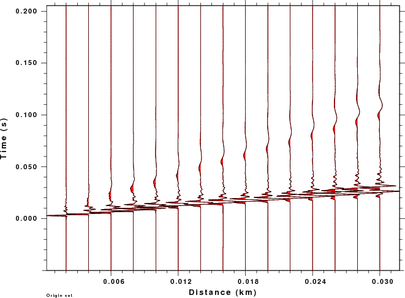

Seismic Exploration Synthetics - Part I
Introduction
The synthetic seismogram code for Computer Programs in Seismology is
designed to provide the medium response to a step in seismic moment for
moment tensor source and a step force for point force sources.
The source time function selection permits a rise time, to reflect the
earthquake source duration, through the selection of triangular and
parabolic pulses. These are discussed in Appendix B of the Computer
Programs in Seismology - Overview document (
PROGRAMS.330/DOC/OVERVIEW.pdf/cps330o.pdf). The use of the
triangular and parabolic pulses have the benefit making clean looking
synthetics to remove the noise caused by a sharp truncation at the
Nyquist frequency.
To be able to use the Green's functions computed using the shortest
duration source pulse to model large earthquakes, the gsac commands triangle, boxcar or trapezoid
can be used to make the source pulse longer.
The programs used to convolve the source pulse are hpulse96, spulse96, gpulse96 and cpulse96 for use with the
wave-number integration, modal superposition, generalized ray and
asymptotic ray tracing synthetics. These codes specify the
source pulses with the following command line flags:
-p -l
L Use a parabolic pulse of duration 4L dt, where dt is
the sampling interval
-t -l N Use a
triangular pulse of duration 2N dt for N > 1 [ -p -L 1 is
equivalent to -t -l 2 ]
-F rfile Use the pulse
defined by the contents of the file rfile
[See the subroutine pupud in the source code for the
format ]
-i
Use
an
impulse
(e.g., true step source with zero rise-time. The pulse
definitions description given here represent the derivative of the
source time function).
In addition the user can specify the type of synthetic, -A for acceleration, -V for velocity and -D for displacement.
Recently, October 28, 2011) a user had problems with using the -F rfile to apply a Ricker
wavelet. There may be a problem in the code, but one source may
be the fact that the maximum of the Ricker wavelet occurs at some time
after the initial point and there is no easy way to zero phase the
pulse when making the synthetics. As a solution gsac now can convolve a waveform
with a zero phase Ricker wavelet.
Before making synthetics, we should discuss source time functions for
exploration. This is more convoluted than for the earthquake
source problem, since the earthquake source time function must be step
like to represent the permanent deformation due to an earthquake.
If we wish to model a simple explosion, a step in isotropic moment may
be adequate, although some overshoot should be allowed according the
Sharpe (1942) model [Sharpe, J. A., (1942). Production of elastic waves
by explosion pressures, Geophysics
7, 144-154]. If we
wish to model a weight drop, a simple step in force at the surface may
not be adequate. Following Day et al (1983) [Day, S. M., N. Rimer
and J. T. Cherry (1983). Surface waves from underground explosions with
spall analysis of elastic and nonlinear source models, Bull. Seism.Am. 73, 247-264.], the applied force
may be as in the next figure:
When the weight is released, there is a
negative force applied to the ground at the weight supports. The
weight falls because of gravity a time τ seconds, when it impacts the
ground the source time function may be represented as
F(t) =
-mg [ H(t) - H(t - τ) ] + mgτ δ (t-τ)
This relation assures that momentum is conserved. To see this
phenomena, one must start recording at the instant the weight is
released rather than at the time of impact. For high frequency
seismograms, the waves generated by the impulsive point force will
dominate the record.
To actually make a synthetic that looks like real observations, one
must simulate the source, as discussed above, and then place the record
through a geophone, which outputs a voltage proportional to a high-pass
filtered ground velocity. The geophone introduces a shape to the
waveforms.
Download
Download the file ricker.tgz and unpack
using the command
gunzip -c ricker.tgz | tar xvf -
cd RICKER
There will be a shell script DOFIT and two subdirectories, WK and
SW. The wavenumber integration synthetics are in WK and the
fundamental mode surface wave synthetics are in SW.
To make the synthetics,
cd RICKER
cd SW
DOIT-sw
cd ..
DOIT-wk
cd ..
DOFIT (script to make the plots below)
Sample Run
The DOIT-sw and DOIT-wk scripts differ only in the use of the
synthetics seismogram programs. The annotated DOIT-wk script
is as follows:
#!/bin/bash
rm -fr ORIG RICKER
#####
# MODEL 1 , Dr. J. Pujol, date 23 Aug 2011, from paper
# "shear wave velocity profiling, at sites with high
# frequency stiffness contrasts: a comparison between
# invasive and non-invasive methods", TABLE 1
#
# Create the model using mkmod96 CREATE THE VELOCITY MODEL USING mkmod96
##### THIS IS COMMENTED SINCE THE MODEL IS GIVEN BELOW
#mkmod96 << EOF
#simple.mod
#Simple Crustal Model
#0
#0.0050 1.100 0.300 1.6 20 20 0 0 1 1
#000000 1.800 0.400 2.0 20 20 0 0 1 1
#EOF
cat > simple.mod << EOF
MODEL.01
Simple Crustal Model
ISOTROPIC
KGS
FLAT EARTH
1-D
CONSTANT VELOCITY
LINE08
LINE09
LINE10
LINE11
H(KM) VP(KM/S) VS(KM/S) RHO(GM/CC) QP QS ETAP ETAS FREFP FREFS
0.0050 1.1000 0.3000 1.6000 20.0 20.0 0.00 0.00 1.00 1.00
0.0000 1.8000 0.4000 2.0000 20.0 20.0 0.00 0.00 1.00 1.00
EOF
cat > dfile << EOF
0.002 0.0005 512 -0.05 0 DEFINE THE DISTANCES, NUMBER OF POINTS AND SAMPLE INTERVAL
0.004 0.0005 512 -0.05 0 THIS WAS ORIGINALLY 0.00025 FOR SAMPLING INTERVAL AND 1024
0.006 0.0005 512 -0.05 0 POINTS. THIS MAKES THE COMPUTATIONAL TIME SIGNIFICANTLY
0.008 0.0005 512 -0.05 0 LONGER
0.01 0.0005 512 -0.05 0
0.012 0.0005 512 -0.05 0
0.014 0.0005 512 -0.05 0
0.016 0.0005 512 -0.05 0 NOT THAT THE TIME SERIES DOES NOT START NOT AT 0 SEC BUT 0.05 SEC
0.018 0.0005 512 -0.05 0 BEFORE THE ORIGIN TIME. THIS IS DOME SINCE THE USE OF THE SYMMETRIC RICKER
0.02 0.0005 512 -0.05 0 WAVELET EXTENDS INTO NEGATIVE TIME AT SHORT DISTANCE
0.022 0.0005 512 -0.05 0
0.024 0.0005 512 -0.05 0
0.026 0.0005 512 -0.05 0
0.028 0.0005 512 -0.05 0
0.03 0.0005 512 -0.05 0
EOF
hprep96 -M simple.mod -d dfile -HS 0.002 -HR 0 -EXF
hspec96 > hspec96.out
hpulse96 -p -V -l 1 | f96tosac -B GENERATE GROUND VELOCITY. USE THE parabolic pulse TO AVOID GIBB's EFFECTS
mkdir ORIG
mv *sac ORIG
#####
# differentiate the point force synthetics
# to simulate a delta function source
#####
gsac << EOF
r ORIG/*VF.sac ORIG/*HF.sac
dif
w
q
EOF
#####
# convolve with a Ricker wavelet
#####
mkdir RICKER
FREQ_RICKER=25
gsac << EOF
##### process the explosion sources THE RICKER FILTERED TRACES ARE OF GROUND VELOCITY TO SIMULATE A GEOPHONE WITH
cd ORIG NATURAL FREQUENCY LESS THAN 25 Hz.
r *.sac
ricker f ${FREQ_RICKER}
cd ../RICKER
w
q
EOF
#####
# clean up
#####
rm -f dfile hspec96.dat hspec96.grn hspec96.out simple.mod
The first comparison is of the B01509ZEX.sac and B01511ZVF.SAC
files from each
technique the gsac
command for the plot is
r SW/ORIG/B01509ZEX.sac WK/ORIG/B01509ZEX.sac
color list red blue
fileid name
ylim all
bg plt
title on l top s m text "Original at 30 m Dt=0.001 s"
p overlay on
plotnps -F7 -W10 -EPS -K < P001.PLT > t.eps ; gm convert -trim t.eps ZEX.over.o.png
r SW/ORIG/B01511ZVF.sac WK/ORIG/B01511ZVF.sac
p
plotnps -F7 -W10 -EPS -K < P002.PLT > t.eps ; gm convert -trim t.eps ZVF.over.o.png
q
The plots comparing the synthetics for the ZEX and ZVF Greens functions
for the surface-wave SW (red) and wavenumber integration (blue). The
difference between a fundamental mode synthetic and the complete
solution are obvious. We also see that the high frequency generation of
P waves is greater for the explosion source.
The next comparison is of the B01509ZEX.sac and B01511zvf.SAC
files from each
technique which have been convolved with the Ricker wavelet. The gsac
command for the plot is
r SW/RICKER/B01509ZEX.sac WK/RICKER/B01509ZEX.sac
lh delta dist
color list red blue
fileid name
ylim all
bg plt
title on l top s m text "Ricker 25 Hz wavelet at 30 m Dt=0.001 s"
p overlay on
r SW/RICKER/B01511ZVF.sac WK/RICKER/B01511ZVF.sac
p
q
The plots comparing the synthetics for the ZEX and ZVF Greens functions
for the surface-wave SW (red) and wavenumber integration (blue)
The final comparison provides record sections for the explosion source
for the original and wavelet filtered traces are created using the gsac commands:
r WK/ORIG/*ZEX.sac
bg plt
prs shd pos color 2
r WK/RICKER/*ZEX.sac
prs
q
The plots resulting plots for the original traces and Ricker wavelets
are given in the next plot:
Original
Traces
|
Ricker
Wavelet
|

|
|